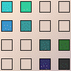
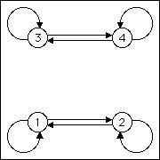
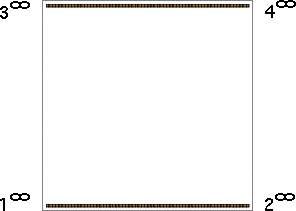
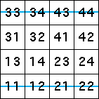

| Suppose we combine the rules for the horizontal line
from (0,0) to (1,0) and the horizontal line
from (0,1) to (1,1). Do we get this pair of lines? |
|  |
 |
 |
|
 |
|
| Yes, we do. |
|
| Note the endpoints of the lines are pairs of
fixed points. |
| Alternately, for lines at the top and bottom of the square we can deduce the
allowed pairs by noting the length 2 address squares through which the lines pass. |
| This is a sensible start because if a line passes through a square,
the combination of transformations corresponding to the address of that
square must be allowed. |
|  |
|
| The length 2 address squares occupied by the driven IFS lines are those crossed by the
blue lines above. From these we see the allowed transitions of the graph: |
| 1 → 1, 2 → 1,
1 → 2, 2 → 2,
3 → 3, 4 → 3,
3 → 4, and 4 → 4. |
|
| General question: For every IFS with one step memory (that is, determined
by allowed pairs), can the allowed pairs be determined by finding the occupied
length 2 address squares? |
| We could say these lines are additive:
the union of the rules produces the union of the attractors. |
| Exercise What other pairs of line rules are additive? |
| Test your ideas with the software
before looking at the answers. |